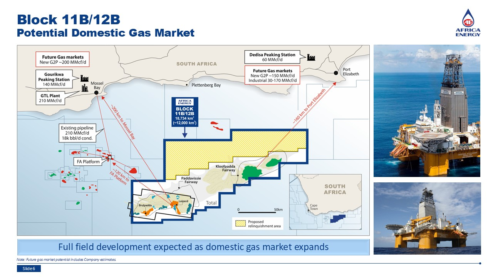
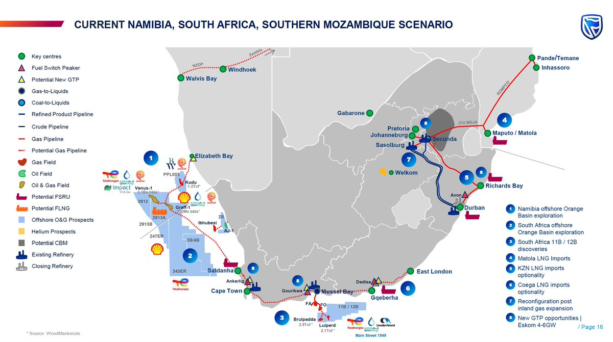

In February 2019, TotalEnergies drilled Brulpadda-1AX — 175 km off the southern coast in 1,800m of water — encountering 57m of net gas-condensate pay. In October 2020, Luiperd-1X was even larger: 73m of net pay in superior reservoir. Together: ~3.4 Tcf of recoverable gas and ~200 MMbbl of condensate. Enough to supply South Africa for over a decade. Yet as of 2026, no development plan exists and TotalEnergies has exited the block.


The Outeniqua Basin is a Mesozoic rift basin south of Mossel Bay. Cretaceous turbidite sandstones deposited by ancient submarine fans form the reservoirs. Brulpadda-1AX (Feb 2019, 3,633m TD, 57m net pay, φ 15-20%) confirmed a working petroleum system. Luiperd-1X (Oct 2020, 40 km east, 73m net pay, φ up to 25%) was larger and higher quality. The trap is a faulted anticline sealed by Late Cretaceous marine shales, sourced from Jurassic–Early Cretaceous organic-rich shales.
In July 2024, TotalEnergies exited Block 11B/12B. The reasons were fundamentally commercial:
The remaining JV partners and government are exploring: finding a replacement operator (Shell, Eni, Gulf NOCs), phased development (Brulpadda first with tieback to Mossel Bay's PetroSA GTL infrastructure), FLNG vessels, or gas-to-power offtake agreements. Strategic implications: Gas Master Plan credibility damaged, LNG imports become the only near-term option, Mozambique gas cliff (2028) looms larger, exploration deterrent effect on other IOCs.
Sources: TotalEnergies press releases (2019, 2020) · PASA · Daily Maverick (July 2024) · Upstream newspaper · Block 11B/12B JV data